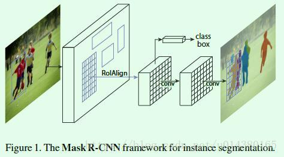
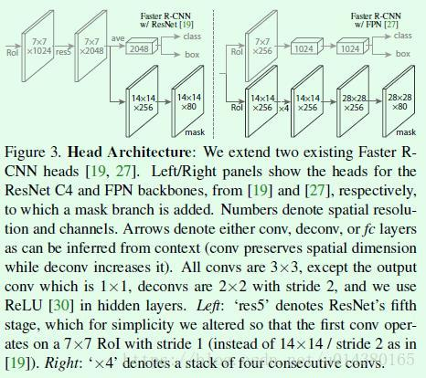
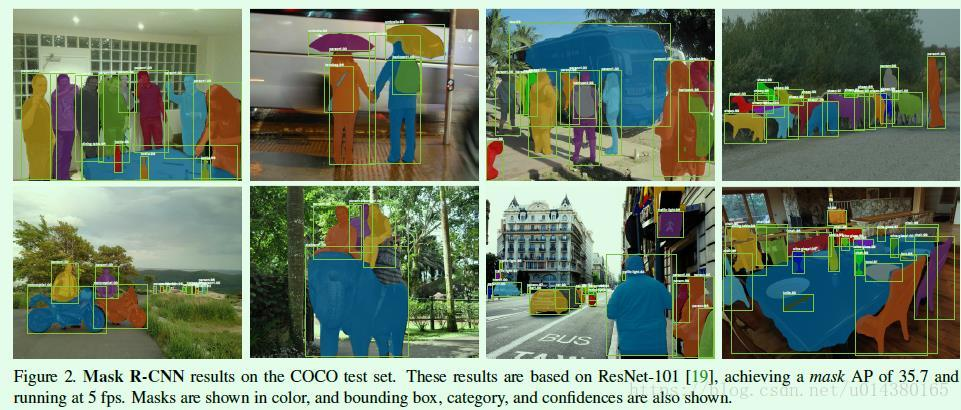
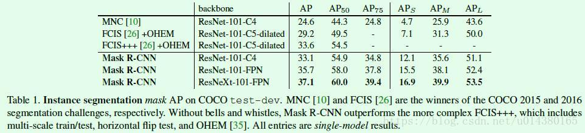
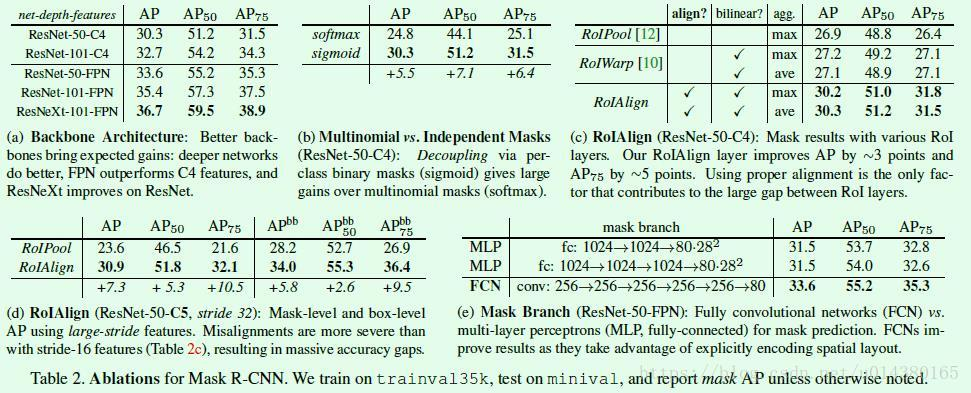

Mask R-CNN是ICCV2017的best paper，在一个网络中同时做目标检测（object detection）和实例分割（instance segmentation）。该算法在单GPU上的运行速度差不多是5 fps，并且在COCO数据集的三个挑战赛：instance segmentation、bounding-box object detecton、person keypoint detection中的效果都要优于现有的单模型算法（包括COCO2016比赛的冠军算法）。这篇博客将重点介绍ROIAlign和ROI Pool的区别，希望能帮助他人理解二者的差异。
这里要说明一下实例分割和语义分割（semantic segmentation）的区别，实例分割需要将属于同一类的不同实例用不同的颜色标明，而语义将属于同一类的不同实例都用一种颜色标出即可。比如Figure1中最后得到的就是实例分割的结果，如果是语义分割，那么所有人用一种颜色标识即可。
Mask R-CNN可以通过Faster R-CNN扩展得到，如Figure1所示。我们知道在Faster R-CNN中，对于每个ROI（文中叫candidate object）主要有两个输出，一个输出是分类结果，也就是预测框的标签；另一个输出是回归结果，也就是预测框的坐标offset。而Mask R-CNN则是添加了第三个输出：object mask，也就说对每个ROI都输出一个mask，该支路是通过FCN网络（如Figure1中的两个卷积层）来实现的。以上这三个输出支路相互之间都是平行关系，相比其他先分割再分类的实例分割算法相比，这种平行设计不仅简单而且高效。

那么直接在Faster RCNN中引入第三条支路就是Mask RCNN吗？并非这么简单。在Faster R-CNN中，由于最后的全连接层的输入要求size统一，但是RPN网络生成的ROI尺寸大小是不一致的，因此有一个ROI Pool层用于将不同size的ROI处理成统一size的输出，然后才作为全连接层的输入。 但是ROI Pool的这种操作无法应用在分割支路，因为输入和输出的ROI像素点的位置对应关系不能保证一致，毕竟当年Faster R-CNN提出的时候主要也是用来做目标检测，但是现在既然Mask R-CNN要在Faster R-CNN上扩展并实现实例分割，那么就要解决这个问题，于是就提出了一个新的层：ROIAlign，用于替代原来Faster R-CNN中的ROIPool层，如图Figure1所示。
在介绍ROIAlign之前，先大致回顾下ROI Pool层的操作：ROI Pool的输入是ROI的坐标和某一层的输出特征，不管是ROI Pool还是ROIAlign，目的都是提取输出特征图上该ROI坐标所对应的特征。RPN网络得到的ROI坐标是针对输入图像大小的，所以首先需要将ROI坐标缩小到输出特征对应的大小，假设输出特征尺寸是输入图像的1/16，那么先将ROI坐标除以16并取整（第一次量化），然后将取整后的ROI划分成HW个bin（论文中是 77，有时候也用1414），因为划分过程得到的bin的坐标是浮点值，所以这里还要将bin的坐标也做一个量化，具体而言对于左上角坐标采用向下取整，对于右下角坐标采用向上取整，最后采用最大池化操作处理每个bin，也就是用每个bin中的最大值作为该bin的值，每个bin都通过这样的方式得到值，最终输出的HW大小的ROI特征。从这里的介绍可以看出ROI Pool有两次量化操作，这两步量化操作会引入误差。
相比之下ROIAlign不再引入量化操作，对于RPN网络得到的ROI坐标直接除以缩放倍数（比如16），这个过程不进行量化，因此得到的ROI坐标仍是浮点值，然后将ROI划分成HW个bin，划分得到的bin坐标也是浮点值，不进行量化，接着通过在每个bin中均匀取4个点，这4个点的值通过该bin所包含的点插值计算得到，最后对这4个点求均值或最大值作为这个bin的值，通过这种方式计算每个bin的值后，最终输出HW大小的ROI特征。可以看出ROIAlign整个过程没有采用量化操作，因此大大减少了量化带来的误差。
损失函数方面，在Fast RCNN的基础上增加了第三个用于生成mask的损失函数，这样总体上损失函数如下所示：
其中Lcls和Lbox和Fast RCNN中定义的分类和回归损失一致，详细介绍下Lmask。在Mask R-CNN中，对于新增加的mask支路，其对于每个ROI的输出维度是$Kmm$，其中$m*m$表示mask的大小，$K$表示$K$个类别，因此这里一共生成$K$个binary mask。这就是文章中提到的class-specific mask概念（原来Faster RCNN的检测部分对坐标的回归也是区分类别的），相对应的就有class-agnostic mask，表示每个ROI输出一个$mm$的mask，这个mask不存在类别的概念，作者也做了实验证明这两种设计对最后的结果差别不大，因此默认采用class-specific mask。在得到预测mask后，对mask的每个像素点值求sigmoid函数值，得到的结果作为$L_{mask}$（交叉熵损失函数）的输入之一。需要注意的是这里也只有正样本ROI才会用于计算Lmask，正样本的定义和目标检测一样，都是IOU大于0.5定义为正样本。其*实Lmask和Lcls非常类似，只不过前者是基于像素点来计算，后者是基于图像来计算，因此和$L_{cls}$类似，虽然这里得到$K$个mask，但是在计算cross-entropy损失函数时只有ground truth对应的那个mask才有效。举个例子：假设某个ROI的ground-truth类别是K3，那么该ROI的Lmask只和K3类别对应的mask相关，其他mask都不会对Lmask产生影响。另外因为一个mask包含多个像素点，所以这里$L_{mask}$是每个像素点的交叉熵损失的均值，这也是文章中将Lmask称为average binary cross-entropy loss的原因。

Figure3是Mask RCNN算法的检测部分示意图。
左边是基于Faster RCNN引入mask支路后的检测部分。图中的ROI指的就是ROIAlign操作，采用77大小的划分得到771024维度的feature map，然后再接ResNet中的res5结构（Faster RCNN中这部分其实存在对ROI的重复计算，这也是后续类似R-FCN算法的改进点，当然也有一些做法是将ROIPool移到后面来做，也就是基于res5的输出做ROIPool，而不是基于res4的输出来做），另外这里对res5做了修改，使得这个结构不改变输入feature map的宽高，res5结构输出772048维度的feature map。基于该feature map有两条支路，上面那条支路经过池化层得到112048维度的输出并作为分类支路和回归支路的输入；下面那条支路接反卷积层和卷积层来得到mask。
右边是基于FPN算法引入mask支路后的检测部分。FPN中就将原来Faster RCNN中的ROI Pool移到res5后面，也就是ROI Pool层之后不再涉及一些特征提取操作，这样就减少了很多重复计算。图中的ROI指的就是ROIAlign操作，上面一条支路得到维度为77256的feature map（因为FPN算法是基于5个融合特征层分别做检测，这里仅以一个融合特征层为例介绍，每个融合特征层的输出channel都是256，因此经过ROIAlign后得到的输出channel还是256），最后接两个1024维度的全连接层就可以做为分类和回归支路的输入。下面一条支路用1414大小的划分得到1414256的输出，然后接数个卷积和反卷积层得到mask。
训练时的一些实现细节：输入图像的处理是将短边resize到800大小；单GPU的batch size设置为2；每张图像提取N个ROI（对于Faster RCNN架构采用N=64，对于FPN架构采用N=512，之所以数量差别这么大，主要原因在于FPN是基于多个融合层分别预测），其中positive和negative的比例是1:3；RPN网络采取5种scale和3种aspect retio。
验证时的一些细节：proposal的数量对于Faster RCNN架构采用300，对于FPN架构采用1000。mask支路都是基于最后score最高的100个预测结果进行的，这样增加的计算量就非常少。
实验结果：
首先是Mask R-CNN算法在COCO数据集上的实例分割结果：

Table1是Mask RCNN算法和其他实例分割算法的结果对比（MNC和FCIS分别是COCO 2015和2016的分割比赛冠军），优势还是比较明显的：

Table2是一些细节对比：（a）是不同特征提取网络下的Mask R-CNN效果对比，ResNet-50-C4表示提取的特征是ResNet的stage4输出，换句话说就是ROI Pool或ROIAlign的输入一是stage4的输出。可以看出更深的网络或更好的特征提取网络可以带来更多的提升。（b）是采用sigmoid和softmax的对比。（c）是在ResNet-50-C4上进行的ROI Pool、ROIWarp和ROIAlign的对比，可以看出ROIAlign的有效性，另外可以看出pooling的类型对ROIAlign的效果影响不大。（d）是在ResNet-50-C5上进行的ROI Pool和ROIAlign的对比，可以看出此时ROI Pool的效果要比从C4提取特征来得差，毕竟越高层的特征量化带来的误差就越大。另外基于C5提取特征的ROIAlign的效果要比基于C4提取特征好一点，这就说明ROIAlign所带来的误差非常小，这个实验还是比较重要的，因为很大程度上解决了长期以来大感受野带来的检测和分割效果差的问题。（e）表示Mask branch采用FCN和MLP的实验结果对比。

除了实例分割的结果，作者在文章中还给出了目标检测相关的结果，如Table3所示。可以看出仅仅把Faster RCNN算法中的ROIPool替换成ROIAlign也能有明显的提升，另外Mask RCNN因为在训练中多了mask相关的监督信息，因此对目标检测效果有一定的提升作用。